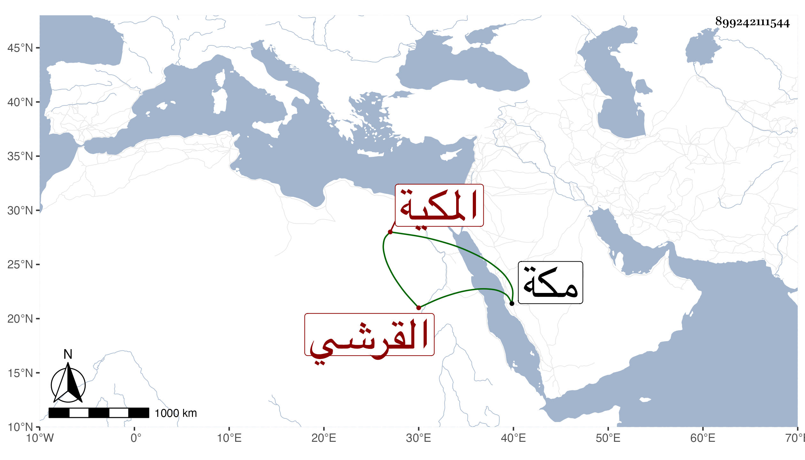

0902Sakhawi.DawLamic.ITO20230111-ara1.EIS1600.899242111544
Biography ID: 899242111544
952
أم كمال ابنة الشهاب أحمد بن ظهيرة بن أحمد بن عطية بن ظهيرة القرشي المكية والدة الكمال أبي البركات محمد بن أبي السعود واسمها عائشة وأمها أم كلثوم ابنة الجمال بن عبد الله بن فهد . أجاز لها في سنة خمس وخمسين فما بعدها الصلاح العلائي والقلانسي والتونسي والقطرواني وابن الرصاص في آخرين ، وتزوجها الجمال أبو السعود محمد بن حسين بن ظهيرة فولدت له عدة وتأيمت بعد موته حتى ماتت بمكة في شوال أو ذي القعدة سنة عشر ، كانت متعبدة خيرة وعندها وسواس كثير في الطهارة . ذكرها الفاسي وغيره .
